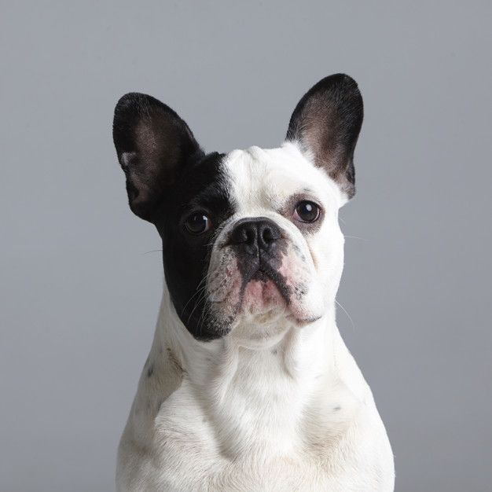

O buldogue Francês, que conhecemos, é o produto de diferentes cruzamentos feitos por criadores nos bairros populares de Paris no ano de 1880.[2] Sua história está ligada a marginalização britânica que sofreu durante o século XIX. Naquela época o buldogue existia em apenas um tamanho na Grã-Bretanha, já que os exemplares nascidos menores eram rejeitados. Levados à França, estes pequenos encontraram maior liberdade para se desenvolverem. Foram criados primeiramente para caçarem ratos, mas após figurarem em pinturas de DegasToulouse-Lautrec, tornaram-se populares inclusive na Inglaterra. De personalidade dita entusiástica e travessa, tornou-se um canino da moda, bem como o principal companheiro de cocheiros e açougueiros.[3] Fisicamente pode atingir os 31 cm e pesar 12,5 kg. Sua pelagem é bastante curta, grossa e de aspecto brilhante, podendo ainda apresentar-se em quatro diferentes cores: fulvo, malhado, vermelho tigrado e preto tigrado. Entre seus principais problemas de saúde estão os oculares e respiratórios (braquicefalia), que o tornam um cão de cuidados caros; e o superaquecimento, sendo então recomendada atenção especial para água.
